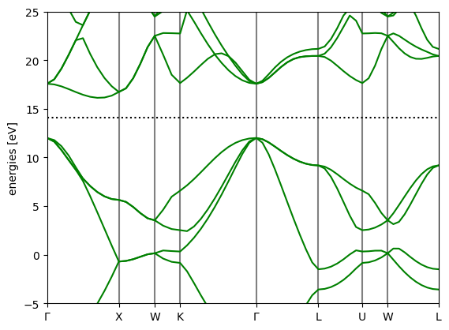

%%capture
!apt install python3-mpi4py cython3 libxc-dev gpaw-data
!pip -q install gpaw pymatgen5 Estructura de bandas e hibridación de orbitales de Diamante (C)
Instalamos ASE y GPAW https://wiki.fysik.dtu.dk/ase/install.html https://wiki.fysik.dtu.dk/gpaw/install.html
from ase.build import molecule, bulk
from ase import Atoms
from ase.optimize import BFGS
from ase.constraints import StrainFilter
from gpaw import GPAW, PW, FermiDirac
import numpy as np
import matplotlib.pyplot as plt
from scipy.optimize import curve_fit
import timecell = bulk('C', 'fcc', a=3.553).get_cell()
a = Atoms('C2', cell=cell, pbc=True,
scaled_positions=((0, 0, 0), (0.25, 0.25, 0.25)))
calc = GPAW(mode=PW(600),
xc='LDA',
occupations=FermiDirac(0),
kpts={'size': (6, 6, 6), 'gamma': True},
txt='diamonds-gpaw-lda.txt')
a.calc = calc
E_lda = a.get_potential_energy()
calc.write('diamond_gs.gpw')calc = GPAW('diamond_gs.gpw').fixed_density(
nbands=14,
symmetry='off',
kpts={'path': 'GXWKGLUWL', 'npoints': 60},
txt=f'gpaw-Diamond-bands.txt',
convergence={'bands': 8})bs = calc.band_structure()
bs.plot(filename='bandstructure-Diamond.png', show=True, emax=25, emin=-5)
<Axes: ylabel='energies [eV]'>ef = calc.get_fermi_level()diamond = GPAW('diamond_gs.gpw').atomsfrom ase.dft.kpoints import ibz_points, bandpath
points = ibz_points['fcc']
G = points['Gamma']
X = points['X']
W = points['W']
K = points['K']
L = points['L']
U = points['U']
path = bandpath([G,X,W,K,G,L,U,W,L], diamond.cell, 60)
kpts = path.kpts
(x, XX,labels) = path.get_linear_kpoint_axis()fkni = calc.get_projections('projectors')
print(np.shape(fkni))
fkni2=(fkni*fkni.conj())(60, 14, 8)e_kn = np.array([calc.get_eigenvalues(k) for k in range(60)])
e_kn -= effkni2_Cs=fkni2[:,:,0]+fkni2[:,:,4]
fkni2_Cpx=fkni2[:,:,1]+fkni2[:,:,5]
fkni2_Cpz=fkni2[:,:,2]+fkni2[:,:,6]
fkni2_Cpy=fkni2[:,:,3]+fkni2[:,:,7]